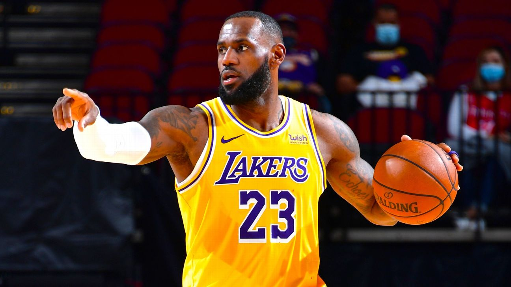
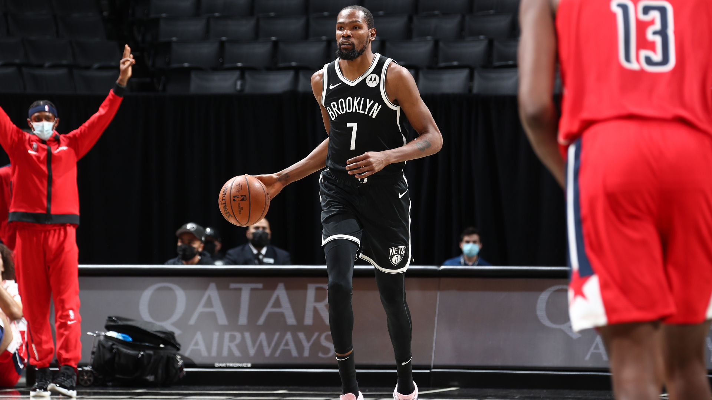
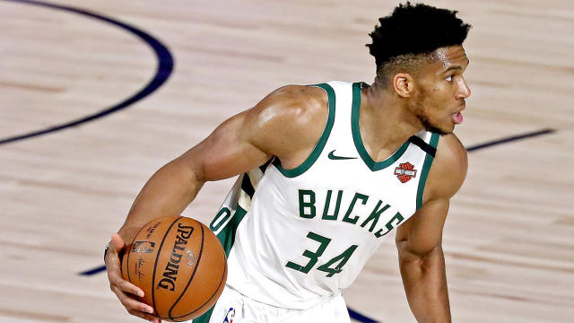
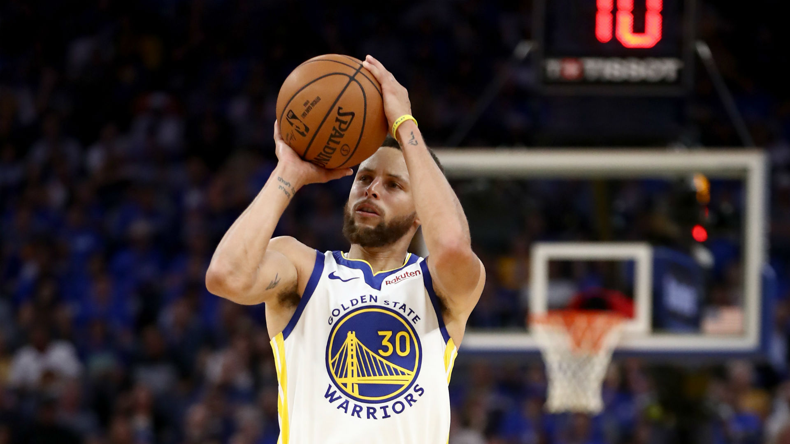
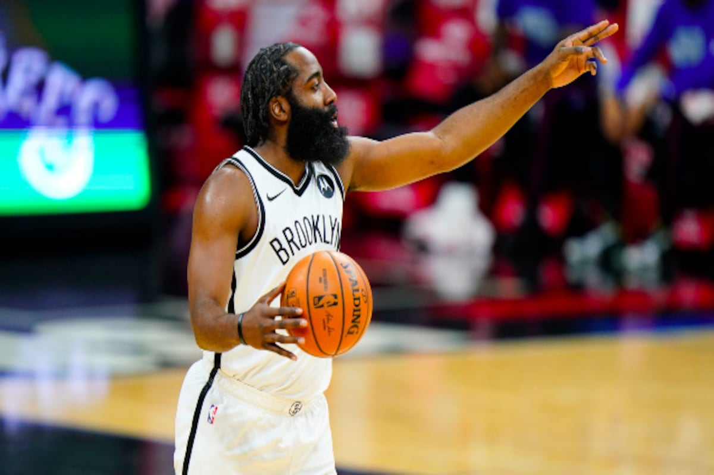

Top NBA players
- Lebron James 
- Kevin Durant 
- Giannis AntetoKounmpo 
- Stephen Curry 
- James Harden 
When LeBron James secured his fourth NBA championship in August, The King cemented himself as the league's best player. After all, James has made it to the NBA Finals each year he's been healthy since 2011. With possibly the best second star he's paired with hin his accomplished career, James led the NBA in assists last year with 10.2 apg. He's the most well-rounded player of this generation, and while there's talented stars chasing his throne, James' chase to be the greatest of all time keeps him motivated to be the best player right now.
Before getting sidelined with a torn Achilles injury in the 2019 NBA Finals, Kevin Durant was the clear No. 2 in the league. As one of the most elite scorers in NBA history, Durant picked up his defensive effort on the loaded Warriors squad. Now after over a year of rehab and Durant looks as good as ever, averaging 31.2 ppg on an efficient 53.8 FG%, 7.2 rpg, and 5.8 apg.
The winner of the last two NBA Most Valuable Player awards, Giannis Antetokounmpo hasn't been able to get it done in the postseason. With two straight exits in the second round, Antetokounmpo's lack of shooting ability has certainly cost him when it matters most. Still, the Greek Freak's seemingly never-ending wingspan and elite athleticism make him an unstoppable force in transition and on the defensive end.
Perhaps the best shooter of all time, Steph Curry has been proving something during the first portion of the 2020-21 season that's been a knock on him during the Warriors' dynasty: he can win games all on his own. Curry has singlehandedly taken over games against the Lakers and more to start this season - even setting a new career-high 62 points against Portland.
Though James Harden's nine-year tenure with Houston ended distastefully, his scoring ability will never go overlooked. What does go overlooked, though, is his vision. Harden led the league in assists per game when he played primarily at the point for the Rockets during the 2016-17 season and is doing so once again this season. In his first handful of games with Brooklyn, Harden has produced 12 apg and that's a trend that won't go away anytime soon with the talented shooters the Nets boast.
| Rank | Name | Games | Points | Team |
|---|---|---|---|---|
| 1 | Lebron James | 41 | 25.4 | LA Lakers |
| 2 | Kevin Durant | 20 | 28.4 | Brooklyn Nets |
| 3 | Giannis AntetoKounmpo | 45 | 28.8 | Milwaukee Bucks |
| 4 | Stephen Curry | 44 | 29.7 | Golden State Warriors |
| 5 | James Harden | 42 | 25.2 | Brooklyn Nets |